<!DOCTYPE html>
<html lang="zh-CN">
<head>
    <meta charset="utf-8">
    <title>Qing談社友分布图</title>
    <meta http-equiv="Content-Type" content="text/html; charset=utf-8">
    <meta name="viewport" content="initial-scale=1.0, user-scalable=no">
    <meta http-equiv="X-UA-Compatible" content="IE=Edge">
    <style>
    body,
    html,
    #container {
        overflow: hidden;
        width: 100%;
        height: 100%;
        margin: 0;
        font-family: "微软雅黑";
    }
    </style>
    <script src="//api.map.baidu.com/api?type=webgl&v=1.0&ak=Ntcld1uAOGnorjipeh7O1wlfBCtPNgK2"></script>
</head>
<body>
    <div id="container"></div>


</body>
</html>
<script>
var map = new BMapGL.Map('container');
map.centerAndZoom(new BMapGL.Point(117.00, 36.40), 5);
map.enableScrollWheelZoom(true);
// 创建点标记
var marker尹泽森 = new BMapGL.Marker(new BMapGL.Point(113.317, 23.083));
var marker_廖璇= new BMapGL.Marker(new BMapGL.Point(111.9, 27.7));                              
var marker_张心悦 = new BMapGL.Marker(new BMapGL.Point(114.92, 27.80));
var marker_恩溪 = new BMapGL.Marker(new BMapGL.Point(109.83, 40.657));
var marker_马若雨 = new BMapGL.Marker(new BMapGL.Point(111.28, 27.14));
var marker_渠艺欢 = new BMapGL.Marker(new BMapGL.Point(110.99, 37.95));
var marker_丛方怡 = new BMapGL.Marker(new BMapGL.Point(117.00, 36.40));
var marker_王志坤 = new BMapGL.Marker(new BMapGL.Point(117.200, 34.26));
// var marker_李明哲 = new BMapGL.Marker(new BMapGL.Point(114.40, 36.30));
var marker_刘哲源 = new BMapGL.Marker(new BMapGL.Point(117.157, 36.399));
var marker_马若源 = new BMapGL.Marker(new BMapGL.Point(117.291, 36.39));
var marker_张佳蔚 = new BMapGL.Marker(new BMapGL.Point(112.30, 33.02));
var marker_王玥 = new BMapGL.Marker(new BMapGL.Point(116.584, 36.413));
var marker_江笛 = new BMapGL.Marker(new BMapGL.Point(121.43, 37.45));
var marker_衣玉林 = new BMapGL.Marker(new BMapGL.Point(121.0, 37.0));
var marker_琳惠 = new BMapGL.Marker(new BMapGL.Point(120.70, 28.00));
var marker_小七 = new BMapGL.Marker(new BMapGL.Point(117.0, 36.0));
var marker_太阳 = new BMapGL.Marker(new BMapGL.Point(108.397, 34.1821));
var marker_江楚 = new BMapGL.Marker(new BMapGL.Point(116.30, 37.45));
var marker_张书杰 = new BMapGL.Marker(new BMapGL.Point(112.30, 33.01));
var marker_钫钫 = new BMapGL.Marker(new BMapGL.Point(110.334, 19.99));
var marker_王昊 = new BMapGL.Marker(new BMapGL.Point(116.51, 36.48));
// 在地图上添加点标记
map.addOverlay(marker尹泽森);
map.addOverlay(marker_廖璇);
map.addOverlay(marker_张心悦);
map.addOverlay(marker_恩溪);
map.addOverlay(marker_马若雨);
map.addOverlay(marker_渠艺欢);
map.addOverlay(marker_丛方怡);
map.addOverlay(marker_王志坤);
// map.addOverlay(marker_李明哲);
map.addOverlay(marker_刘哲源);
map.addOverlay(marker_马若源);
map.addOverlay(marker_张佳蔚);
map.addOverlay(marker_王玥);
map.addOverlay(marker_江笛);
map.addOverlay(marker_衣玉林);
map.addOverlay(marker_琳惠);
map.addOverlay(marker_小七);
map.addOverlay(marker_太阳);
map.addOverlay(marker_江楚);
map.addOverlay(marker_张书杰);
map.addOverlay(marker_钫钫);
map.addOverlay(marker_王昊);


// 创建图文信息窗口 尹泽森
var sContent尹泽森 = `<h3 style='margin:0 0 5px 0;'>尹泽森</h3>
    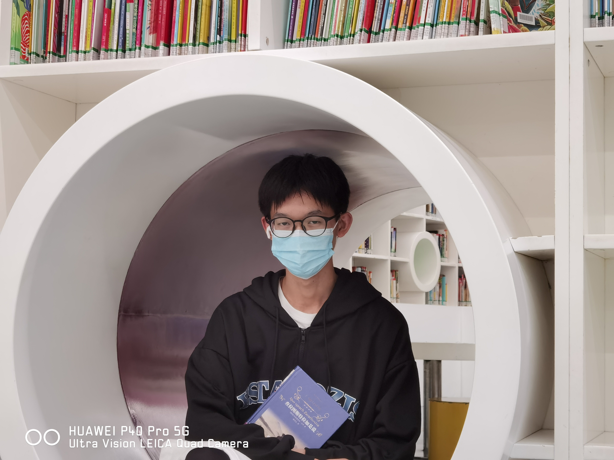
    <p style='margin:0;line-height:1.5;font-size:15px;text-indent:2em'>
    18岁,家在山东青岛,现在在广州学习,我热爱大自然,对一切新鲜的事物都充满着好奇心,喜欢QING談社,想和大家成为朋友,一起共同成长!
    </p></div>`;
var infoWindow尹泽森 = new BMapGL.InfoWindow(sContent尹泽森);
// marker添加点击事件
marker尹泽森.addEventListener('click', function () {
    this.openInfoWindow(infoWindow尹泽森);
    // 图片加载完毕重绘infoWindow
    document.getElementById('imgDemo').onload = function () {
        infoWindow尹泽森.redraw(); // 防止在网速较慢时生成的信息框高度比图片总高度小，导致图片部分被隐藏
    };
});   


// 创建图文信息窗口 
var sContent_廖璇 = `<h3 style='margin:0 0 5px 0;'>廖璇</h3>
    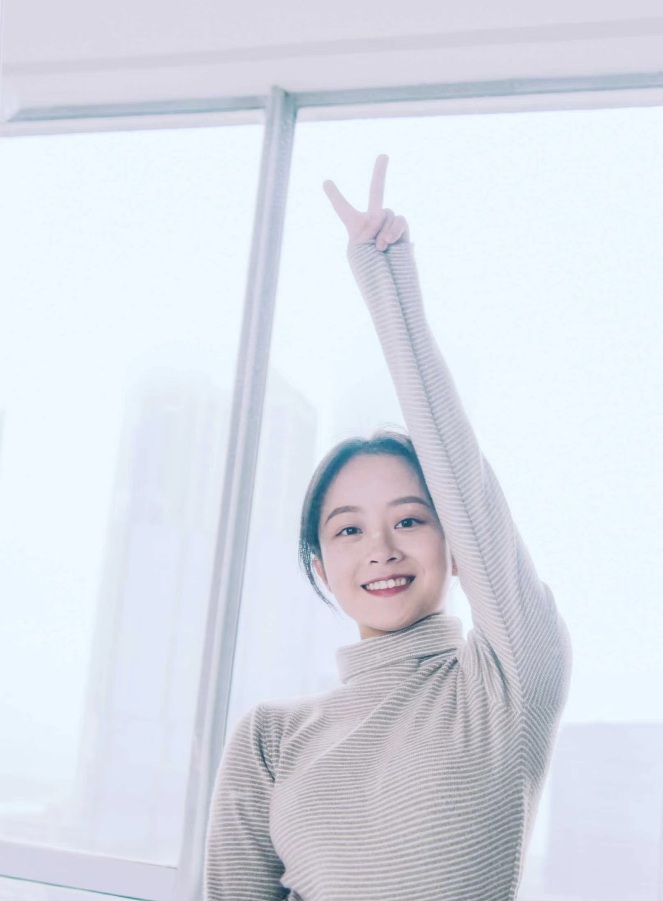
    <p style='margin:0;line-height:1.5;font-size:15px;text-indent:2em'>
        23岁，坐标湖南娄底,
热爱生命，热爱很多事情，很高兴认识QING談社的伙伴们，希望社里有更多线下面基的机会！想和大家见面嗨皮！
    </p></div>`;
var infoWindow_廖璇 = new BMapGL.InfoWindow(sContent_廖璇);
// marker添加点击事件
marker_廖璇.addEventListener('click', function () {
    this.openInfoWindow(infoWindow_廖璇);
    // 图片加载完毕重绘infoWindow
    document.getElementById('imgDemo').onload = function () {
        infoWindow_廖璇.redraw(); // 防止在网速较慢时生成的信息框高度比图片总高度小，导致图片部分被隐藏
    };
});

   
   

// 创建图文信息窗口 
var sContent_张心悦 = `<h3 style='margin:0 0 5px 0;'>张心悦</h3>
    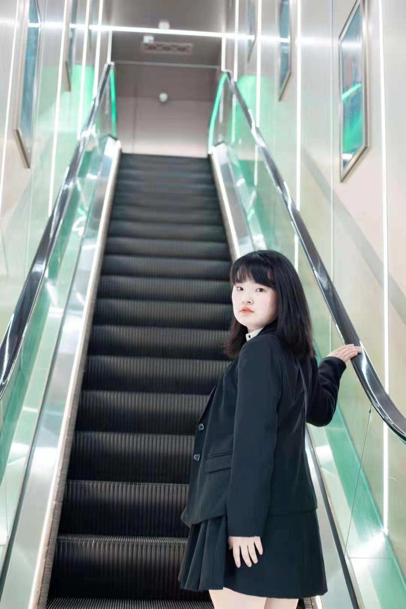
    <p style='margin:0;line-height:1.5;font-size:15px;text-indent:2em'>
        21岁，坐标江西新余,
我妈妈事湖南人，我爸爸是江西人，我是一个江湖混血，从小泡在辣椒坛子里抱着辣椒籽长大的
我喜欢寻找和探索生命，喜欢一切新鲜的东西，喜欢了解自己，喜欢自由，喜欢qing谈社，喜欢大家，希望未来我们可以在某一个时空点，在某一个经纬度，相聚.
    </p></div>`;
var infoWindow_张心悦 = new BMapGL.InfoWindow(sContent_张心悦);
// marker添加点击事件
marker_张心悦.addEventListener('click', function () {
    this.openInfoWindow(infoWindow_张心悦);
    // 图片加载完毕重绘infoWindow
    document.getElementById('imgDemo').onload = function () {
        infoWindow_张心悦.redraw(); // 防止在网速较慢时生成的信息框高度比图片总高度小，导致图片部分被隐藏
    };
});


// 创建图文信息窗口 
var sContent_恩溪 = `<h3 style='margin:0 0 5px 0;'>恩溪</h3>
    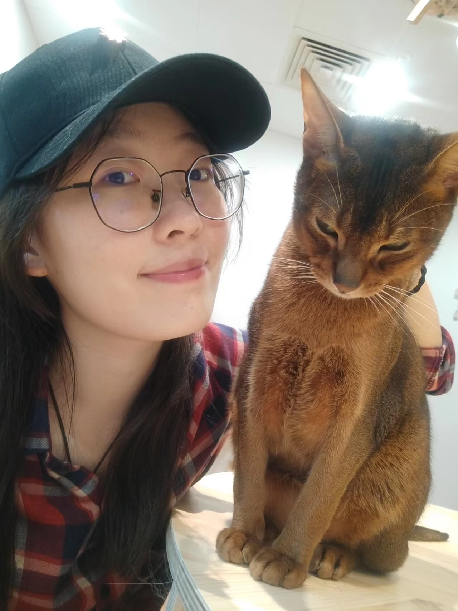
    <p style='margin:0;line-height:1.5;font-size:15px;text-indent:2em'>
        22岁,坐标内蒙古包头,纯北方人，不像内蒙人的内蒙人，喜欢艺术。期待和大家的面基～
    </p></div>`;
var infoWindow_恩溪 = new BMapGL.InfoWindow(sContent_恩溪);
// marker添加点击事件
marker_恩溪.addEventListener('click', function () {
    this.openInfoWindow(infoWindow_恩溪);
    // 图片加载完毕重绘infoWindow
    document.getElementById('imgDemo').onload = function () {
        infoWindow_恩溪.redraw(); // 防止在网速较慢时生成的信息框高度比图片总高度小，导致图片部分被隐藏
    };
});


// 创建图文信息窗口 
var sContent_马若雨 = `<h3 style='margin:0 0 5px 0;'>马若雨</h3>
    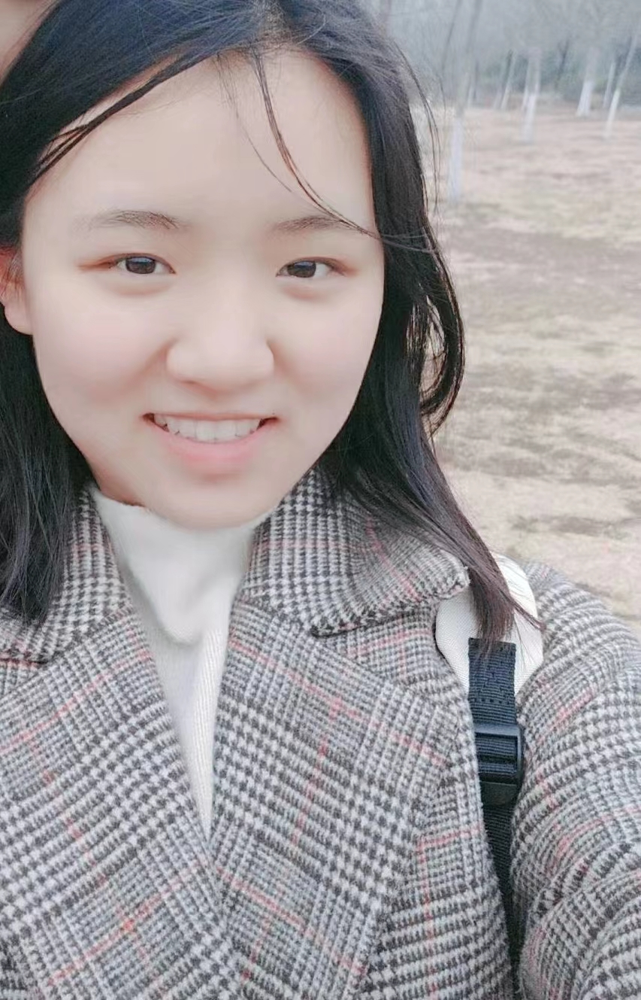
    <p style='margin:0;line-height:1.5;font-size:15px;text-indent:2em'>
        23岁，坐标湖南邵阳,
生在南方，长在北方。有一口北方腔，一个南方胃。喜欢和小朋友待在一起，最想做还没有实现的是房车旅行，想开房车去找大家玩！
    </p></div>`;
var infoWindow_马若雨 = new BMapGL.InfoWindow(sContent_马若雨);
// marker添加点击事件
marker_马若雨.addEventListener('click', function () {
    this.openInfoWindow(infoWindow_马若雨);
    // 图片加载完毕重绘infoWindow
    document.getElementById('imgDemo').onload = function () {
        infoWindow_马若雨.redraw(); // 防止在网速较慢时生成的信息框高度比图片总高度小，导致图片部分被隐藏
    };
});


// 创建图文信息窗口 
var sContent_渠艺欢 = `<h3 style='margin:0 0 5px 0;'>渠艺欢</h3>
    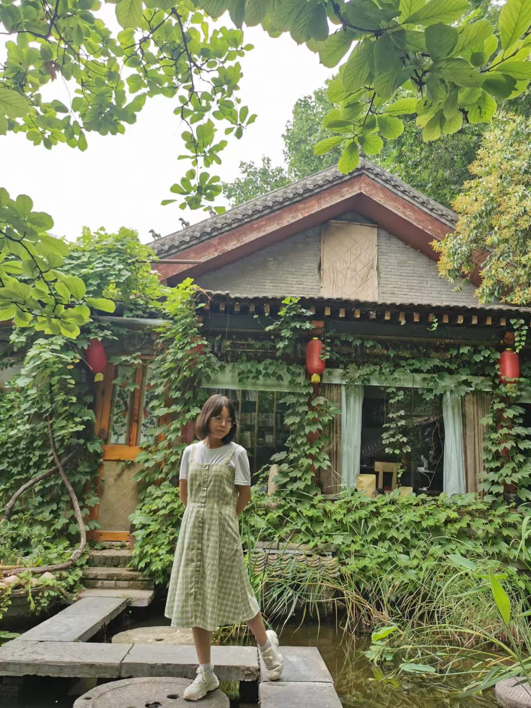
    <p style='margin:0;line-height:1.5;font-size:15px;text-indent:2em'>
        21岁，坐标山西吕梁,
兴趣爱好广泛，好奇心十足。热爱自我成长，探索生命，热爱走在同行路上的大家!
    </p></div>`;
var infoWindow_渠艺欢 = new BMapGL.InfoWindow(sContent_渠艺欢);
// marker添加点击事件
marker_渠艺欢.addEventListener('click', function () {
    this.openInfoWindow(infoWindow_渠艺欢);
    // 图片加载完毕重绘infoWindow
    document.getElementById('imgDemo').onload = function () {
        infoWindow_渠艺欢.redraw(); // 防止在网速较慢时生成的信息框高度比图片总高度小，导致图片部分被隐藏
    };
});


// 创建图文信息窗口 
var sContent_丛方怡 = `<h3 style='margin:0 0 5px 0;'>丛方怡</h3>
    
    <p style='margin:0;line-height:1.5;font-size:15px;text-indent:2em'>
        22岁，现居济南滴威海人，正在古典学术的海洋里艰难划水。和五湖四海的伙伴们一起唠嗑，携手进步，岂非人生一大快事？！！！
    </p></div>`;
var infoWindow_丛方怡 = new BMapGL.InfoWindow(sContent_丛方怡);
// marker添加点击事件
marker_丛方怡.addEventListener('click', function () {
    this.openInfoWindow(infoWindow_丛方怡);
    // 图片加载完毕重绘infoWindow
    document.getElementById('imgDemo').onload = function () {
        infoWindow_丛方怡.redraw(); // 防止在网速较慢时生成的信息框高度比图片总高度小，导致图片部分被隐藏
    };
});


// 创建图文信息窗口 
var sContent_王志坤 = `<h3 style='margin:0 0 5px 0;'>王志坤</h3>
    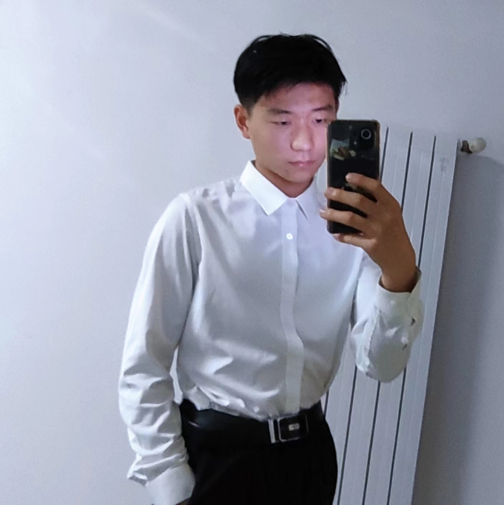
    <p style='margin:0;line-height:1.5;font-size:15px;text-indent:2em'>
        坐标:江苏徐州沛县,
喜欢交朋友，慢热，刚开始话比较少，后来话比较多，内心正直的阳光大男孩，很高兴与大家相识!
    </p></div>`;
var infoWindow_王志坤 = new BMapGL.InfoWindow(sContent_王志坤);
// marker添加点击事件
marker_王志坤.addEventListener('click', function () {
    this.openInfoWindow(infoWindow_王志坤);
    // 图片加载完毕重绘infoWindow
    document.getElementById('imgDemo').onload = function () {
        infoWindow_王志坤.redraw(); // 防止在网速较慢时生成的信息框高度比图片总高度小，导致图片部分被隐藏
    };
});


// // 创建图文信息窗口 
// var sContent_李明哲 = `<h3 style='margin:0 0 5px 0;'>李明哲</h3>
//     
//     <p style='margin:0;line-height:1.5;font-size:15px;text-indent:2em'>
//         21岁,坐标河北磁县,是一名有志青年，但行动力不强，喜欢音乐，喜欢悠然自得   
//     </p></div>`;
// var infoWindow_李明哲 = new BMapGL.InfoWindow(sContent_李明哲);
// // marker添加点击事件
// marker_李明哲.addEventListener('click', function () {
//     this.openInfoWindow(infoWindow_李明哲);
//     // 图片加载完毕重绘infoWindow
//     document.getElementById('imgDemo').onload = function () {
//         infoWindow_李明哲.redraw(); // 防止在网速较慢时生成的信息框高度比图片总高度小，导致图片部分被隐藏
//     };
// });


// 创建图文信息窗口 
var sContent_刘哲源 = `<h3 style='margin:0 0 5px 0;'>刘哲源</h3>
    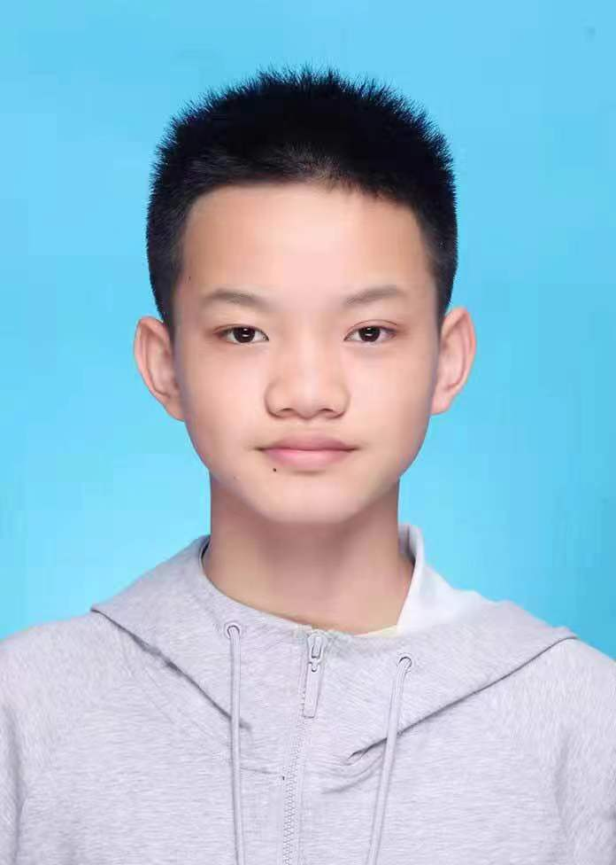
    <p style='margin:0;line-height:1.5;font-size:15px;text-indent:2em'>
        15岁，在山东济南，爱好摄影，书法，运动,很开心来到倾谈社!
    </p></div>`;
var infoWindow_刘哲源 = new BMapGL.InfoWindow(sContent_刘哲源);
// marker添加点击事件
marker_刘哲源.addEventListener('click', function () {
    this.openInfoWindow(infoWindow_刘哲源);
    // 图片加载完毕重绘infoWindow
    document.getElementById('imgDemo').onload = function () {
        infoWindow_刘哲源.redraw(); // 防止在网速较慢时生成的信息框高度比图片总高度小，导致图片部分被隐藏
    };
});


// 创建图文信息窗口 
var sContent_马若源 = `<h3 style='margin:0 0 5px 0;'>马若源</h3>
    
    <p style='margin:0;line-height:1.5;font-size:15px;text-indent:2em'>
        坐标湖南邵阳,是个喜欢唱歌跳舞和学语言的女孩，对很多事情都充满好奇，但也有很多事情都还没尝试过，最希望自己可以沉下心来精通一门技术.
    </p></div>`;
var infoWindow_马若源 = new BMapGL.InfoWindow(sContent_马若源);
// marker添加点击事件
marker_马若源.addEventListener('click', function () {
    this.openInfoWindow(infoWindow_马若源);
    // 图片加载完毕重绘infoWindow
    document.getElementById('imgDemo').onload = function () {
        infoWindow_马若源.redraw(); // 防止在网速较慢时生成的信息框高度比图片总高度小，导致图片部分被隐藏
    };
});


// 创建图文信息窗口 
var sContent_张佳蔚 = `<h3 style='margin:0 0 5px 0;'>张佳蔚</h3>
    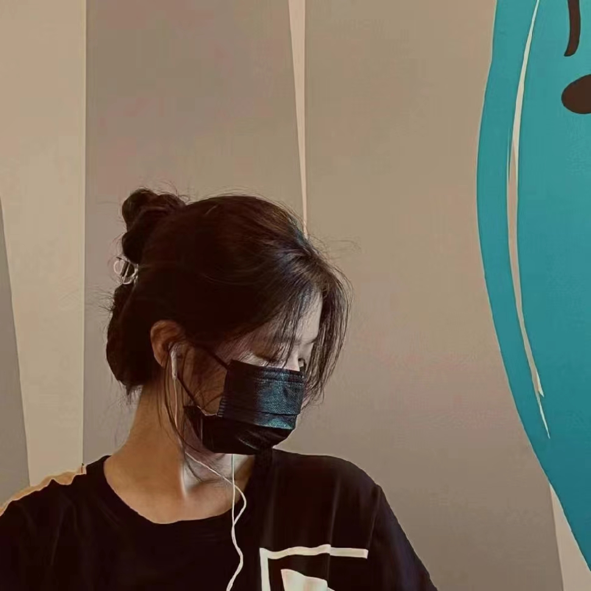
    <p style='margin:0;line-height:1.5;font-size:15px;text-indent:2em'>  
16岁，坐标河南。
我也不知道我是北方人还是南方人，河南这个地理位置有点难以分辨，就当我是北方女孩吧。
喜欢跳舞，享受舞动的美好，喜欢烹饪，可以做好多好多好吃的。哈哈哈哈！
    </p></div>`;
var infoWindow_张佳蔚 = new BMapGL.InfoWindow(sContent_张佳蔚);
// marker添加点击事件
marker_张佳蔚.addEventListener('click', function () {
    this.openInfoWindow(infoWindow_张佳蔚);
    // 图片加载完毕重绘infoWindow
    document.getElementById('imgDemo').onload = function () {
        infoWindow_张佳蔚.redraw(); // 防止在网速较慢时生成的信息框高度比图片总高度小，导致图片部分被隐藏
    };
});


// 创建图文信息窗口 
var sContent_王玥 = `<h3 style='margin:0 0 5px 0;'>王玥</h3>
    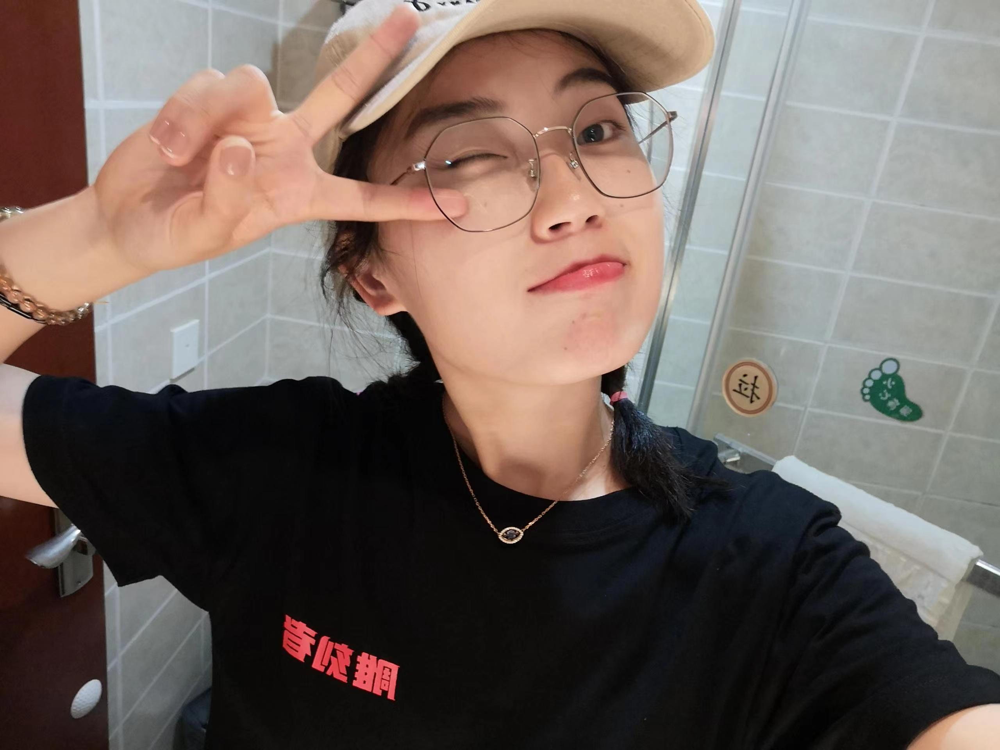
    <p style='margin:0;line-height:1.5;font-size:15px;text-indent:2em'>  
24岁，来自威海,
一个现阶段迷茫的人,
在努力成为一名英语老师的路上.
    </p></div>`;
var infoWindow_王玥 = new BMapGL.InfoWindow(sContent_王玥);
// marker添加点击事件
marker_王玥.addEventListener('click', function () {
    this.openInfoWindow(infoWindow_王玥);
    // 图片加载完毕重绘infoWindow
    document.getElementById('imgDemo').onload = function () {
        infoWindow_王玥.redraw(); // 防止在网速较慢时生成的信息框高度比图片总高度小，导致图片部分被隐藏
    };
});


// 创建图文信息窗口 
var sContent_江笛 = `<h3 style='margin:0 0 5px 0;'>江笛</h3>
    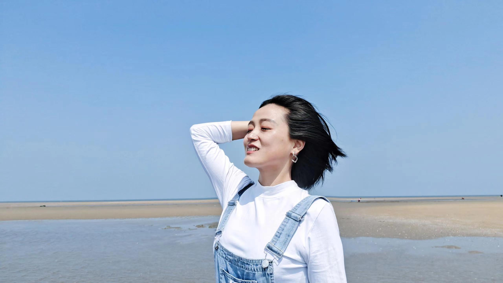
    <p style='margin:0;line-height:1.5;font-size:15px;text-indent:2em'>  
        现在烟台,江笛一直孜孜不倦地走在教育探索的路上，热爱教育事业，享受陪伴孩子成长的点点滴滴，热衷于阅读、写作、诗歌、戏剧等一切美好的事物，相信每个孩子都是天才，笃信“教育者的修为和胸襟，是教育成功的重中之重”，渴望和更多的生命发生链接，渴望真挚的友谊，渴望和QING谈社的大家一起创造令人期待的未来。
    </p></div>`;
var infoWindow_江笛 = new BMapGL.InfoWindow(sContent_江笛);
// marker添加点击事件
marker_江笛.addEventListener('click', function () {
    this.openInfoWindow(infoWindow_江笛);
    // 图片加载完毕重绘infoWindow
    document.getElementById('imgDemo').onload = function () {
        infoWindow_江笛.redraw(); // 防止在网速较慢时生成的信息框高度比图片总高度小，导致图片部分被隐藏
    };
});


// 创建图文信息窗口 
var sContent_衣玉林 = `<h3 style='margin:0 0 5px 0;'>衣玉林</h3>
    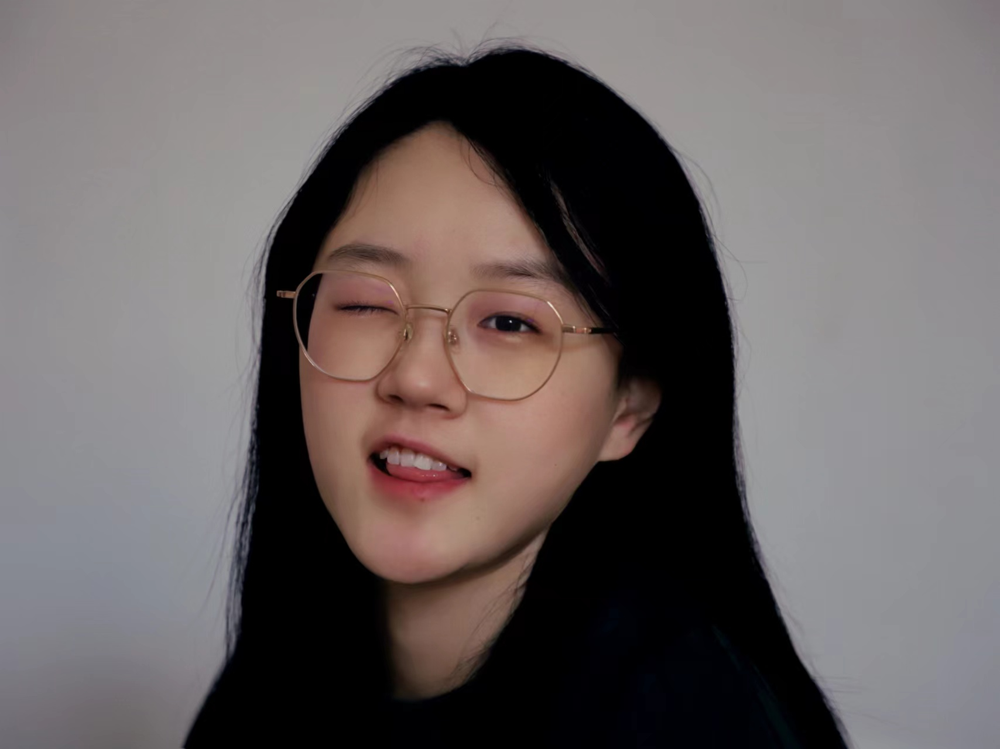
    <p style='margin:0;line-height:1.5;font-size:15px;text-indent:2em'>  
        99年生人，喜欢拍照养花看书，也喜欢骑车游泳跑步，目前是一名记者。
    </p></div>`;
var infoWindow_衣玉林 = new BMapGL.InfoWindow(sContent_衣玉林);
// marker添加点击事件
marker_衣玉林.addEventListener('click', function () {
    this.openInfoWindow(infoWindow_衣玉林);
    // 图片加载完毕重绘infoWindow
    document.getElementById('imgDemo').onload = function () {
        infoWindow_衣玉林.redraw(); // 防止在网速较慢时生成的信息框高度比图片总高度小，导致图片部分被隐藏
    };
});
// 创建图文信息窗口 
var sContent_琳惠 = `<h3 style='margin:0 0 5px 0;'>琳惠</h3>
    
    <p style='margin:0;line-height:1.5;font-size:15px;text-indent:2em'>  
        办公室茶农。
爱好艺术，喜欢设计，日常耳机不离身，以前喜欢听躁的，现在开始听华语乐队和粤语歌，特别中意港风意境，无论是文字中的，还是粤语腔。
    </p></div>`;
var infoWindow_琳惠 = new BMapGL.InfoWindow(sContent_琳惠);
// marker添加点击事件
marker_琳惠.addEventListener('click', function () {
    this.openInfoWindow(infoWindow_琳惠);
    // 图片加载完毕重绘infoWindow
    document.getElementById('imgDemo').onload = function () {
        infoWindow_琳惠.redraw(); // 防止在网速较慢时生成的信息框高度比图片总高度小，导致图片部分被隐藏
    };
});


// 创建图文信息窗口 
var sContent_小七 = `<h3 style='margin:0 0 5px 0;'>小七</h3>
    
    <p style='margin:0;line-height:1.5;font-size:15px;text-indent:2em'>  
        白羊座的小七，思考是本能，成长是诉求，爱一切美好与深刻。不管入世出世还是成熟可爱，只做独一无二的自己。
    </p></div>`;
var infoWindow_小七 = new BMapGL.InfoWindow(sContent_小七);
// marker添加点击事件
marker_小七.addEventListener('click', function () {
    this.openInfoWindow(infoWindow_小七);
    // 图片加载完毕重绘infoWindow
    document.getElementById('imgDemo').onload = function () {
        infoWindow_小七.redraw(); // 防止在网速较慢时生成的信息框高度比图片总高度小，导致图片部分被隐藏
    };
});


// 创建图文信息窗口 
var sContent_太阳 = `<h3 style='margin:0 0 5px 0;'>太阳</h3>
    
    <p style='margin:0;line-height:1.5;font-size:15px;text-indent:2em'>  
        喜欢给自己很多框框架架后而获得的自由😄享受自由也享受痛苦难过与不安。更是热爱这个美好的世界。喜欢摄影舞蹈写作音乐美术工作生活与爱
    </p></div>`;
var infoWindow_太阳 = new BMapGL.InfoWindow(sContent_太阳);
// marker添加点击事件
marker_太阳.addEventListener('click', function () {
    this.openInfoWindow(infoWindow_太阳);
    // 图片加载完毕重绘infoWindow
    document.getElementById('imgDemo').onload = function () {
        infoWindow_太阳.redraw(); // 防止在网速较慢时生成的信息框高度比图片总高度小，导致图片部分被隐藏
    };
});


// 创建图文信息窗口 
var sContent_王昊 = `<h3 style='margin:0 0 5px 0;'>王昊</h3>
    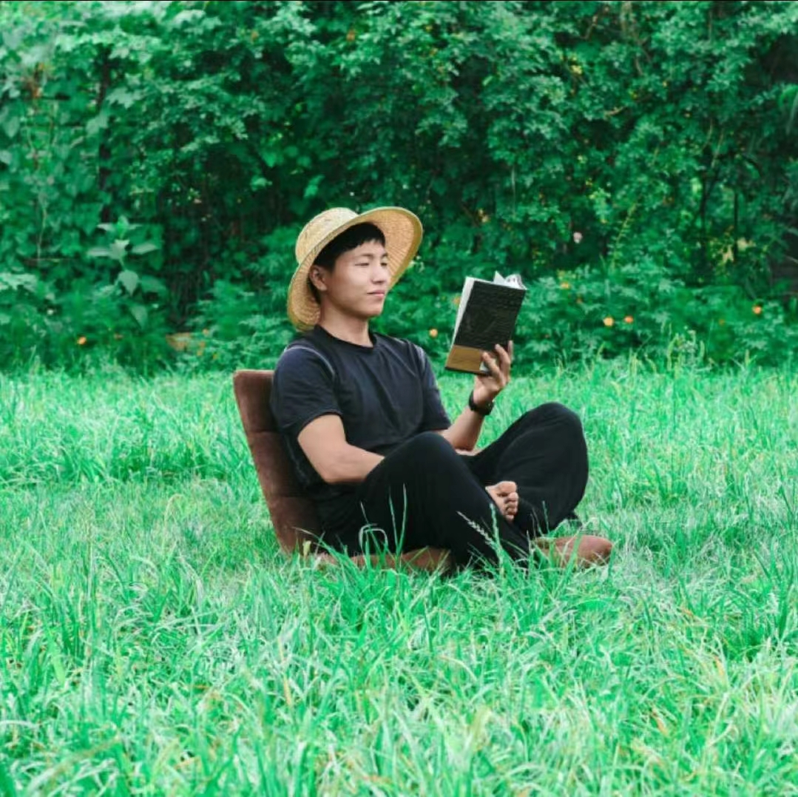
    <p style='margin:0;line-height:1.5;font-size:15px;text-indent:2em'>  
        山东齐河人,
一个热爱生活，探索生活，审视生活，创造生活的行者。
    </p></div>`;
var infoWindow_王昊 = new BMapGL.InfoWindow(sContent_王昊);
// marker添加点击事件
marker_王昊.addEventListener('click', function () {
    this.openInfoWindow(infoWindow_王昊);
    // 图片加载完毕重绘infoWindow
    document.getElementById('imgDemo').onload = function () {
        infoWindow_王昊.redraw(); // 防止在网速较慢时生成的信息框高度比图片总高度小，导致图片部分被隐藏
    };
});


// 创建图文信息窗口 
var sContent_江楚 = `<h3 style='margin:0 0 5px 0;'>江楚</h3>
    
    <p style='margin:0;line-height:1.5;font-size:15px;text-indent:2em'>  
对什么都感兴趣，都想尝试体验一遍。只要不要求我做的，我都非常愿意去做。
    </p></div>`;
var infoWindow_江楚 = new BMapGL.InfoWindow(sContent_江楚);
// marker添加点击事件
marker_江楚.addEventListener('click', function () {
    this.openInfoWindow(infoWindow_江楚);
    // 图片加载完毕重绘infoWindow
    document.getElementById('imgDemo').onload = function () {
        infoWindow_江楚.redraw(); // 防止在网速较慢时生成的信息框高度比图片总高度小，导致图片部分被隐藏
    };
});


// 创建图文信息窗口 
var sContent_张书杰 = `<h3 style='margin:0 0 5px 0;'>张书杰</h3>
    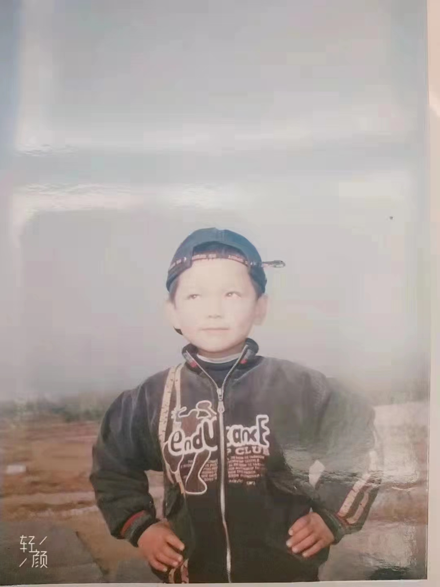
    <p style='margin:0;line-height:1.5;font-size:15px;text-indent:2em'>  
        一个生于上个世纪末，相信光的男人!
    </p></div>`;
var infoWindow_张书杰 = new BMapGL.InfoWindow(sContent_张书杰);
// marker添加点击事件
marker_张书杰.addEventListener('click', function () {
    this.openInfoWindow(infoWindow_张书杰);
    // 图片加载完毕重绘infoWindow
    document.getElementById('imgDemo').onload = function () {
        infoWindow_张书杰.redraw(); // 防止在网速较慢时生成的信息框高度比图片总高度小，导致图片部分被隐藏
    };
});


// 创建图文信息窗口 
var sContent_钫钫 = `<h3 style='margin:0 0 5px 0;'>钫钫</h3>
    
    <p style='margin:0;line-height:1.5;font-size:15px;text-indent:2em'>
        喜欢瑜伽和阅读，还喜欢和小朋友一起玩～
    </p></div>`;
var infoWindow_钫钫 = new BMapGL.InfoWindow(sContent_钫钫);
// marker添加点击事件
marker_钫钫.addEventListener('click', function () {
    this.openInfoWindow(infoWindow_钫钫);
    // 图片加载完毕重绘infoWindow
    document.getElementById('imgDemo').onload = function () {
        infoWindow_钫钫.redraw(); // 防止在网速较慢时生成的信息框高度比图片总高度小，导致图片部分被隐藏
    };
});


</script>